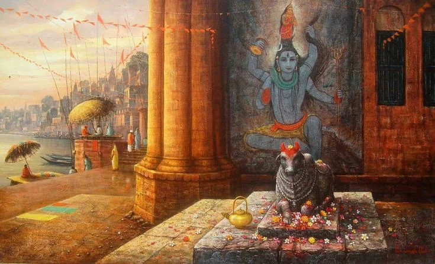
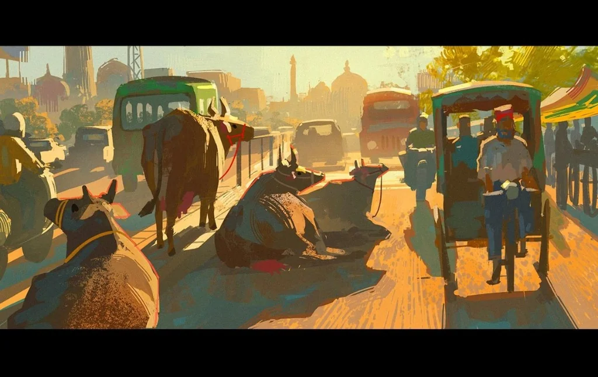
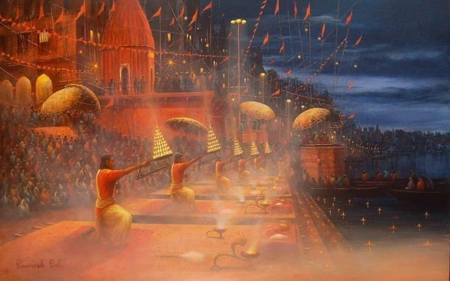

Emergency & Essential Services Directory
Instant phone numbers for pilgrim assistance across Mathura, Vrindavan, Govardhan, and Barsana.
Direct access to verified Brajwasi drivers, ride tracking, ashram booking, and lost & found.
Local law enforcement and safety assistance near temple zones and parikrama marg.
Major charitable multi-speciality hospital on Swami Vivekananda Marg, Vrindavan.
Central transit station connecting major North and West Indian express trains.
Frequently Requested Assistance
Browse rapid solutions for typical pilgrimage situations.
Real-Time Pilgrim Care in Holy Brij
From Yamuna snan assistance to silent e-rickshaw dispatch across sacred temple gullies.

Ghat & DarshanAssistance during morning Yamuna Snan, boat rides, and evening Keshi Ghat Maha Aarti.

Verified MobilityPre-screened local drivers for hassle-free travel through Vrindavan's sacred lanes.

Sanctuary CareGuidance on Bankey Bihari, ISKCON, and Prem Mandir peak darshan schedules.
Frequently Asked Questions
Clarifications on booking modifications, payments, and transit delays.